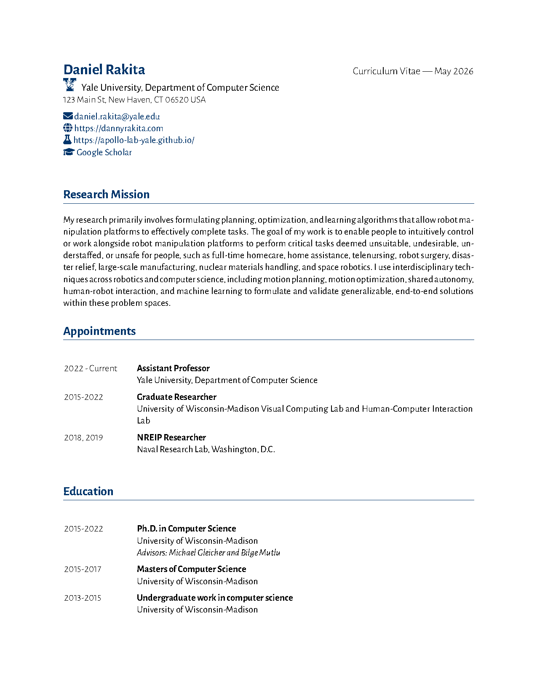

About Me
I am an Assistant Professor at Yale University in the Department of Computer Science where I lead the Applied Planning, Learning, and Optimization (APOLLO) Lab.
My research primarily involves formulating planning, learning, and optimization algorithms that allow robot manipulation platforms to effectively complete tasks.
The goal of my work is to enable people to intuitively control or work alongside robot manipulation platforms to perform critical tasks deemed unsuitable, undesirable, understaffed, or unsafe for people, such as full-time homecare, home assistance, telenursing, robot surgery, disaster relief, large-scale manufacturing, nuclear materials handling, and space robotics. I use interdisciplinary techniques across robotics and computer science, including motion planning, motion optimization, shared autonomy, human-robot interaction, and machine learning to formulate and validate generalizable, end-to-end solutions within these problem spaces.
Visit the Applied Planning, Learning, and Optimization (APOLLO) Lab website for more information about our research projects, team, and open positions.
News
Curriculum Vitae

My full CV is available for download: Download PDF
Publications
Loading publications...
Awards
- Best Paper Award Winner, ACM/IEEE HRI (2023)
- Outstanding Graduate-Student Research Award, UW-Madison (2022)
- Outstanding Reviewer Award, IROS (2021)
- Cisco Graduate Student Fellowship Recipient, UW-Madison (2021)
- Three Minute Thesis Competition Finalist, UW-Madison (2021)
- Best Paper Award Finalist, ACM/IEEE HRI (2021)
- Microsoft PhD Fellowship Recipient (2019)
- Best Paper Award Winner, ACM/IEEE HRI (2018)
- NSF Graduate Research Fellowship Program Honorable Mention (2017)
- HRI Pioneer (2017)
- ACM SIGGRAPH Student Research Competition 1st Place